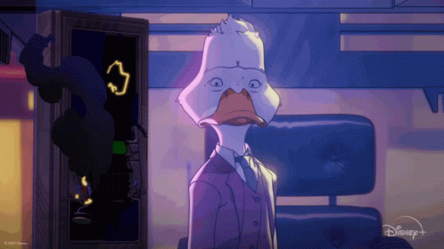
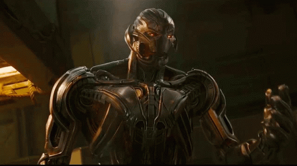
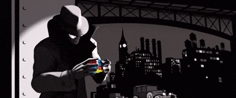
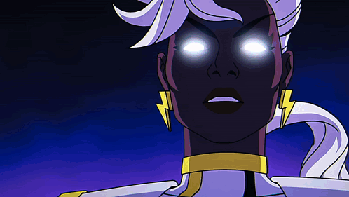
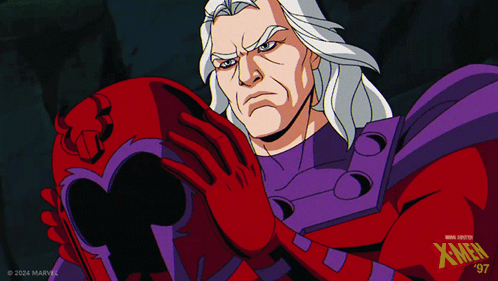
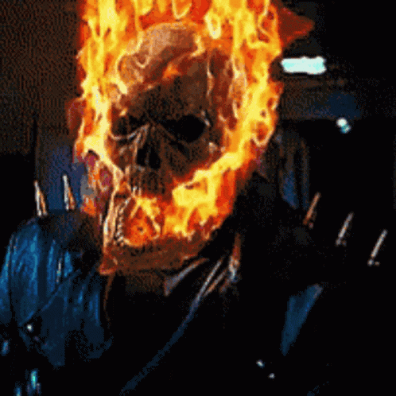
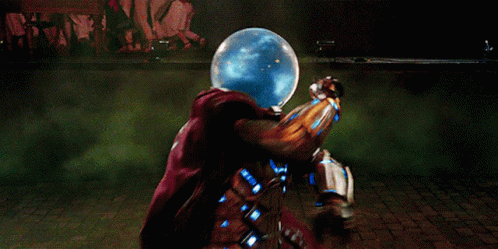
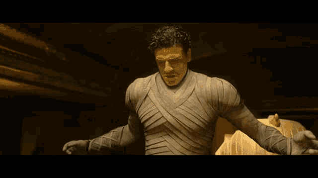
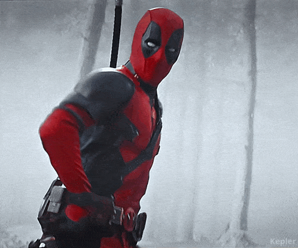

Top 10: Howard o pato
Primeira HQ: Adventure into Fear #19 (1973)
Howard o pato, é Um pato alienígena sarcástico que vive na Terra, conhecido por seu humor ácido.
Embora um personagem de nicho, ganhou notoriedade com aparições em filmes como Guardiões da Galáxia e em outros projetos.
Top 09: Ultron
Primeira HQ: Avengers #54 (1968)
Um dos vilões mais formidáveis dos Vingadores, Ultron é uma IA criada por Hank Pym que se volta contra seus criadores.
Tornou-se mais conhecido após ser o vilão principal em Vingadores: Era de Ultron (2015).
Top 08: Venom

Primeira HQ: The Amazing Spider-Man #300 (1988)
Um simbionte alienígena que se liga a Eddie Brock, criando um dos vilões/anti-heróis mais icônicos do universo do Homem-Aranha.
Extremamente popular, especialmente com os filmes solo recentes de Venom e aparições em outros filmes e video games.
Top 07: Spider Man Noir
Primeira HQ: Spider-Man: Noir #1 (2009)
Uma versão alternativa do Homem-Aranha situada na década de 1930, com um estilo sombrio e detectivesco.
Ganhou fama imensa com Spider-Man: no aranhaverso (2018).
Top 06: Tempestade
Primeira HQ: Giant-Size X-Men #1 (1975)
Uma das X-Men mais poderosas, com a habilidade de controlar o clima, e uma líder natural.
Extremamente popular entre os fãs de X-Men e também apareceu em várias adaptações cinematográficas.
Top 05: Magneto
Primeira HQ: X-Men #1 (1963)
O icônico vilão e líder dos mutantes que acredita na supremacia dos mutantes sobre os humanos.
Um dos vilões mais complexos e famosos da Marvel, aparecendo em diversas adaptações, incluindo os filmes e jogos dos X-Men.
Top 04: Motoqueiro Fantasma
Primeira HQ: Marvel Spotlight #5 (1972)
Johnny Blaze vende sua alma ao demônio e se transforma no vingador sobrenatural conhecido como Motoqueiro Fantasma.
Famoso nos anos 70 e 90, voltou ao foco com filmes e aparições em séries como Agents of S.H.I.E.L.D e um dos persongens mais requisitados para entrar no MCU.
Top 03: Mysterio
Primeira HQ: The Amazing Spider-Man #13 (1964)
Um dos vilões mais criativos do Homem-Aranha, usa ilusões e truques especiais para enganar e torturar seus inimigos.
Ficou mais conhecido do público geral após ser o vilão principal de Homem-Aranha: Longe de Casa (2019).
Top 02: Cavaleiro da lua
Primeira HQ: Werewolf by Night #32 (1975)
Um herói com múltiplas personalidades que combate o crime em nome do deus egípcio Khonshu.
Ganhou mais reconhecimento após a sua série da Disney+ Moon Knight (2022).
Top 01!: Deadpool
Primeira HQ: New Mutants #98 (1991)
Um mercenário com fator de cura e humor irreverente que frequentemente quebra a quarta parede.
Um dos personagens mais populares da Marvel, especialmente após os filmes de Deadpool estrelados por Ryan Reynolds e o seu do novo filme com o wolverine